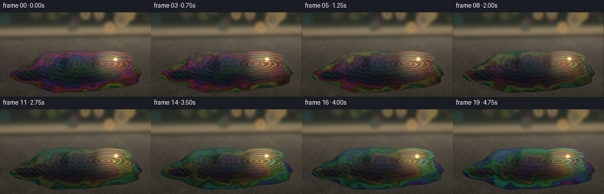
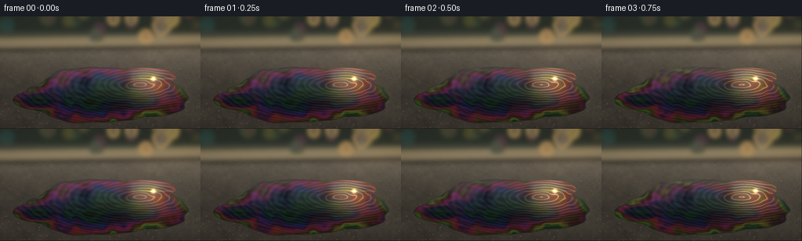

CODING AGENTS AS PIXEL WORLD MODELS
traex/GPT-5.6-Sol · phygen_081
点击播放 · 原生 RGB 像素
逐轮保存的候选
回放视频、检查图与代码变化。
每份候选均可单独播放。实际图片检查记录在下方工具轨迹中。
候选 01播放与检查图
点击播放 · 原生 RGB 像素


展开代码变化
--- 上一保存版本
+++ 本次保存版本
@@ -0,0 +1,222 @@
+from pathlib import Path
+import json
+
+import numpy as np
+from PIL import Image, ImageDraw, ImageFilter
+
+import artifact_io
+
+
+CASE_DIR = Path(__file__).resolve().parent
+SPEC = json.loads((CASE_DIR / "task_spec.json").read_text())
+W, H = SPEC["width"], SPEC["height"]
+N = SPEC["frames"]
+S = 3 # supersampling for clean puddle edges and highlights
+RW, RH = W * S, H * S
+RESAMPLE = Image.Resampling.BICUBIC
+
+
+def smoothstep(a, b, x):
+ t = np.clip((x - a) / (b - a), 0.0, 1.0)
+ return t * t * (3.0 - 2.0 * t)
+
+
+def field_noise(seed, coarse_w, coarse_h, blur=0.0):
+ """Deterministic soft noise expanded to render resolution."""
+ rng = np.random.default_rng(seed)
+ a = np.clip(rng.normal(0.5, 0.18, (coarse_h, coarse_w)), 0, 1)
+ im = Image.fromarray(np.uint8(a * 255), "L").resize((RW, RH), RESAMPLE)
+ if blur:
+ im = im.filter(ImageFilter.GaussianBlur(blur * S))
+ return np.asarray(im, dtype=np.float32) / 255.0
+
+
+def hsv_rgb(h, s, v):
+ h = np.mod(h, 1.0)
+ i = np.floor(h * 6).astype(np.int16)
+ f = h * 6 - i
+ p = v * (1 - s)
+ q = v * (1 - f * s)
+ t = v * (1 - (1 - f) * s)
+ i %= 6
+ out = np.empty(h.shape + (3,), dtype=np.float32)
+ choices = ((v, t, p), (q, v, p), (p, v, t),
+ (p, q, v), (t, p, v), (v, p, q))
+ for k, channels in enumerate(choices):
+ m = i == k
+ for c in range(3):
+ out[..., c][m] = channels[c][m]
+ return out
+
+
+# Supersampled coordinates.
+yy, xx = np.mgrid[0:RH, 0:RW].astype(np.float32)
+x = (xx + 0.5) / RW
+y = (yy + 0.5) / RH
+rng = np.random.default_rng(8101)
+
+# Multi-scale asphalt grain, fixed through the shot.
+n_large = field_noise(10, 18, 12, 0.4)
+n_mid = field_noise(11, 64, 38, 0.15)
+n_fine = field_noise(12, 230, 130, 0.0)
+grain = 0.48 * n_large + 0.34 * n_mid + 0.18 * n_fine - 0.5
+
+# Road is warmer toward the sunlit horizon and on the right.
+horizon_light = np.exp(-((y - 0.27) / 0.20) ** 2)
+side_light = smoothstep(0.30, 1.0, x) * (1.0 - smoothstep(0.76, 1.03, y))
+road_luma = 0.205 + 0.075 * (1 - y) + 0.095 * horizon_light + 0.04 * side_light
+road = np.empty((RH, RW, 3), np.float32)
+road[..., 0] = road_luma * 1.08 + grain * 0.105
+road[..., 1] = road_luma * 1.025 + grain * 0.095
+road[..., 2] = road_luma * 0.92 + grain * 0.085
+
+# Fine mineral flecks and shallow pits on the asphalt.
+road_im = Image.fromarray(np.uint8(np.clip(road, 0, 1) * 255), "RGB")
+d = ImageDraw.Draw(road_im, "RGBA")
+for _ in range(980):
+ py = rng.uniform(0.24, 1.02)
+ # perspective: aggregate grows slightly in the foreground
+ rad = rng.uniform(0.18, 0.62) * S * (0.45 + py)
+ px = rng.uniform(-0.03, 1.03)
+ X, Y = px * RW, py * RH
+ if rng.random() < 0.58:
+ c = rng.integers(92, 146)
+ col = (int(c + 11), int(c + 6), int(c), int(rng.integers(25, 75)))
+ else:
+ c = rng.integers(15, 52)
+ col = (int(c), int(c), int(c), int(rng.integers(28, 75)))
+ d.ellipse((X-rad*1.5, Y-rad*.7, X+rad*1.5, Y+rad*.7), fill=col)
+road = np.asarray(road_im, dtype=np.float32) / 255.0
+
+# Deliberately out-of-focus far street: curb, warm verge and tree bokeh.
+far = Image.new("RGBA", (RW, RH), (0, 0, 0, 0))
+fd = ImageDraw.Draw(far, "RGBA")
+fd.rectangle((0, 0, RW, 32*S), fill=(42, 49, 43, 255))
+fd.rectangle((0, 20*S, RW, 30*S), fill=(67, 72, 61, 245))
+fd.polygon([(0, 28*S), (RW, 24*S), (RW, 39*S), (0, 43*S)],
+ fill=(136, 126, 101, 245))
+fd.line([(0, 31*S), (RW, 27*S)], fill=(232, 200, 137, 170), width=1*S)
+# soft vertical silhouettes and sunlight bokeh
+for _ in range(34):
+ bx = rng.integers(-30*S, RW + 30*S)
+ by = rng.integers(-8*S, 27*S)
+ br = rng.integers(2*S, 11*S)
+ if bx > RW * .56 and rng.random() < .65:
+ col = (245, rng.integers(185, 229), rng.integers(88, 150), rng.integers(25, 100))
+ else:
+ col = (rng.integers(27, 79), rng.integers(42, 88), rng.integers(35, 69), rng.integers(90, 190))
+ fd.ellipse((bx-br, by-br, bx+br, by+br), fill=col)
+far = far.filter(ImageFilter.GaussianBlur(3.2*S))
+far_rgba = np.asarray(far, dtype=np.float32) / 255.0
+fa = far_rgba[..., 3:4]
+road = road * (1-fa) + far_rgba[..., :3] * fa
+
+# Fixed world-space puddle geometry. Its asymmetric lobes make the liquid organic.
+cx, cy = 0.525, 0.705
+u = (x - cx) / 0.405
+v = (y - cy) / 0.245
+theta = np.arctan2(v, u)
+radius = np.sqrt(u*u + v*v)
+boundary = (1.0 + 0.045*np.sin(3*theta+0.7) + 0.035*np.sin(5*theta-1.3)
+ + 0.022*np.sin(9*theta+2.1) + 0.012*np.sin(17*theta))
+q_main = radius / boundary
+# Narrow connected tongue on the left, and a small top-right lobe.
+q_left = np.sqrt(((x-.205)/.145)**2 + ((y-.745)/.093)**2)
+q_top = np.sqrt(((x-.728)/.160)**2 + ((y-.540)/.088)**2)
+q = np.minimum(q_main, np.minimum(q_left*1.025, q_top*1.04))
+puddle = 1.0 - smoothstep(0.982, 1.018, q)
+inner = 1.0 - smoothstep(0.91, 1.00, q)
+rim = np.exp(-((q - 0.985) / 0.030) ** 2) * puddle
+
+# Oil thickness fields used for broad, coherent interference colors.
+oil_n1 = field_noise(32, 17, 11, 1.2)
+oil_n2 = field_noise(33, 38, 23, 0.5)
+oil_n3 = field_noise(34, 90, 50, 0.2)
+
+
+def render_frame(k):
+ # Slow hand-held push and tiny lateral float; resample the fixed road plate.
+ phase = 2*np.pi*k/N
+ zoom = 1.0 + 0.0045*k/(N-1)
+ dx = 0.45*S*np.sin(phase*0.72)
+ dy = 0.34*S*np.sin(phase*0.55 + 0.8)
+ plate = Image.fromarray(np.uint8(np.clip(road, 0, 1)*255), "RGB")
+ crop_w, crop_h = RW/zoom, RH/zoom
+ left = (RW-crop_w)/2 + dx
+ top = (RH-crop_h)/2 + dy
+ plate = plate.transform((RW, RH), Image.Transform.EXTENT,
+ (left, top, left+crop_w, top+crop_h), resample=RESAMPLE)
+ scene = np.asarray(plate, dtype=np.float32)/255.0
+
+ # Reflective liquid: dark at the near edge, blue-gold sky near the far edge.
+ sky_mix = np.clip((0.77-y)/0.38, 0, 1)
+ reflection = np.empty_like(scene)
+ reflection[..., 0] = 0.055 + 0.20*sky_mix
+ reflection[..., 1] = 0.070 + 0.24*sky_mix
+ reflection[..., 2] = 0.075 + 0.26*sky_mix
+ # Warm sun-path in the water, strongest toward the far right.
+ sun_path = np.exp(-((x-.755)/.12)**2) * np.exp(-((y-.575)/.18)**2)
+ reflection += sun_path[..., None] * np.array([.37, .25, .10], np.float32)
+
+ # Reflected dark trees/buildings at the far edge, softened into vertical forms.
+ refl_shapes = (0.055*np.sin(31*x + 1.4) + 0.030*np.sin(63*x-0.7))
+ refl_zone = np.exp(-((y-.555)/.105)**2) * smoothstep(.40, .57, y)
+ reflection -= np.maximum(refl_shapes, -0.012)[..., None] * refl_zone[..., None]
+
+ # Gentle capillary ripples travel through the thin film over five seconds.
+ rr = np.sqrt(((x-.70)/.53)**2 + ((y-.61)/.31)**2)
+ wave = np.sin(92*rr - 1.05*k + 5.0*oil_n2)
+ wave2 = np.sin(118*(y + .045*np.sin(9*x)) - .72*k)
+ ripple = (0.020*wave + 0.009*wave2) * inner
+ reflection += ripple[..., None]
+
+ # Thin-film hue follows fluid thickness, forming large slick ribbons, not noise.
+ thickness = (1.65*q + 1.10*oil_n1 + .42*oil_n2 + .10*oil_n3
+ + .050*k + .09*np.sin(12*x + .23*k))
+ hue = np.mod(.71 + .56*thickness, 1.0)
+ rainbow = hsv_rgb(hue, np.full_like(hue, .78), np.full_like(hue, .83))
+ ribbons = .5 + .5*np.sin(12.0*thickness + 1.3*np.sin(theta*2) + .18*k)
+ # Color is most visible around the thin edge and in a few broad interior swirls.
+ edge_color = np.exp(-((q-.84)/.23)**2)
+ color_alpha = puddle * (0.075 + .25*edge_color) * (.42 + .58*ribbons)
+ color_alpha *= (0.78 + .22*np.sin(phase + x*3))
+ reflection = reflection*(1-color_alpha[..., None]) + rainbow*color_alpha[..., None]
+
+ # Blend liquid onto road and add dark wet meniscus at the perimeter.
+ scene = scene*(1-puddle[..., None]) + reflection*puddle[..., None]
+ scene *= (1 - (rim*.22)[..., None])
+ scene += (rim*.055)[..., None] * np.array([.35, .46, .48], np.float32)
+
+ # Broken glints along ripple crests in the sun path.
+ crest = smoothstep(.86, .985, .5+.5*wave) * sun_path * inner
+ crest *= (.55 + .45*np.sin(phase*1.1+.4)**2)
+ scene += crest[..., None] * np.array([.36, .31, .20], np.float32)
+
+ # A tight moving star glint and its horizontal diffraction streak.
+ gx = .765 + .006*np.sin(.7*phase)
+ gy = .552 + .004*np.cos(phase)
+ glint = np.exp(-(((x-gx)/.011)**2 + ((y-gy)/.018)**2))
+ streak = np.exp(-((y-gy)/.0035)**2) * np.exp(-np.abs(x-gx)/.075)
+ gleam = (1.05*glint + .31*streak) * puddle
+ scene += gleam[..., None] * np.array([1.0, .82, .48], np.float32)
+
+ # Soft diagonal sunshine veil, kept subtle to preserve road detail.
+ beam_axis = y - (.18 + .36*(1-x))
+ beam = np.exp(-(beam_axis/.16)**2) * smoothstep(.52, .92, x)
+ scene += beam[..., None] * np.array([.040, .030, .012], np.float32)
+
+ # Slightly warm filmic grade and natural vignette.
+ vignette = 1 - .18*np.clip(((x-.5)/.72)**2 + ((y-.53)/.79)**2, 0, 1)
+ scene *= vignette[..., None]
+ scene[..., 0] *= 1.035
+ scene[..., 2] *= .965
+ scene = np.clip(scene, 0, 1)
+
+ out = Image.fromarray(np.uint8(scene*255), "RGB").resize((W, H), Image.Resampling.LANCZOS)
+ return np.asarray(out, dtype=np.uint8)
+
+
+frames = np.stack([render_frame(k) for k in range(N)])
+artifact_io.save(frames, CASE_DIR)
+print(f"saved {frames.shape[0]} RGB frames at {frames.shape[2]}x{frames.shape[1]}")
+
可观测工具轨迹
实际执行的命令与返回图片。
命令 1exit 0
/bin/bash -lc 'cat prompt.txt'
命令 2exit 0
/bin/bash -lc 'cat GENERATION_RULES.md'
命令 3exit 0
/bin/bash -lc "cat task_spec.json && printf '\\n---FILES---\\n' && find . -maxdepth 2 -type f -printf '%p\\n' | sort"
命令 4exit 0
/bin/bash -lc "sed -n '1,260p' artifact_io.py"
命令 5exit 0
/bin/bash -lc 'python generate.py'
命令 6exit 0
/bin/bash -lc '(command -v chafa || true); (command -v viu || true); (command -v jp2 || true); file frames/00.png pixels.npz index.html; ls -lh inspection.png transition_check.png pixels.npz index.html'
命令 7exit 0
/bin/bash -lc "python - <<'PY'
from pathlib import Path
import numpy as np
from PIL import Image
p=Path('.')
a=np.stack([np.array(Image.open(p/'frames'/f'{i:02}.png')) for i in range(20)])
print('shape/dtype',a.shape,a.dtype)
print('global min/max/mean',a.min(),a.max(),a.mean(axis=(0,1,2)).round(2))
d=np.abs(np.diff(a.astype(float),axis=0))
print('frame delta mean range',d.mean((1,2,3)).min().round(3),d.mean((1,2,3)).max().round(3))
print('changed pixel fraction range',(d.max(3)>0).mean((1,2)).min().round(3),(d.max(3)>0).mean((1,2)).max().round(3))
print('artifacts',[(x.name,x.stat().st_size) for x in [p/'pixels.npz',p/'index.html',p/'inspection.png',p/'transition_check.png']])
PY"保存候选 1 份；完成命令 7 次；可验证图片返回 0 张。原始 API 响应与完整日志保留在本地。